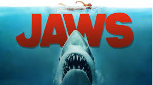
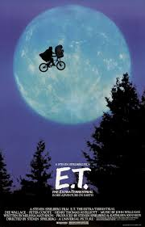

Steven Spielberg
Biography
Early Life
Spielberg was born on December 18, 1946 in Cincinnati, Ohio. He was born into a orthodox jewish family. At this point in time he faced difficulties with his religion. He faced anti semitism and his family's religious practices. He felt embarrassed as a result. As a child, he cited numerous influences from films he directed as a kid from school. This helped him launch his career as a professional film director.
Films
Steven Spielberg has directed a wide range of films. He is one of the American film industry's most critically successful filmmakers, with praise for his directing talent and versatility, and he has won the Academy Award for Best Director twice. Some of his movies are also among the highest-grossing films, while his total work makes him the highest-grossing film director in history. His net worth is estimated to be more than $3 billion.
Jaws
 Steven Spielbergs first major film was Jaws. As the the title implies is about a man-eating shark that attacks people swimming at the beach. In 1975, the shark thriller became a blockbuster hit. It is one of the greatest films ever made. It won numerous awards for its music and music and editing.
E.T
In the 80's he went on to direct E.T the extra-terrestrial. This is another great film that was selected by the National Film Registry,
Schindlers List
Steven decided to take on a project involving the holocaust. The movie became personal to the director as he himself is jewish and has grandparents that were holocaust survivors themselves. The film is considered one of Spielbergs best. It went on to win 7 academy awards including best picture.
Saving Private Ryan
Set during World War II, Steven Spielberg directed one of the greatest war movies of all time. To this day it still holds up. Saving Private Ryan was universally praised for its direction, storyline, realism and acting. It has the most accurate depictions of world war two battles. Veterans of world war II claimed that they were experiencing recurring symptoms of ptsd from the movie.
Steven Spielberg has inspired many other big time directors to make movies.
To learn more about the directors inspiration for movies,